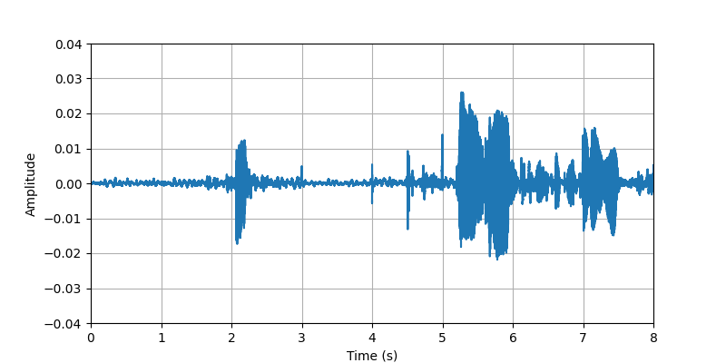
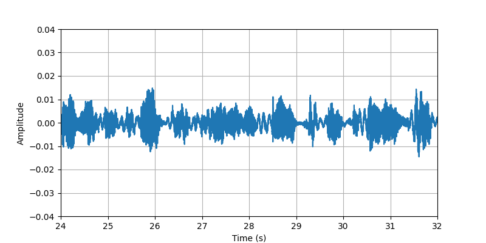

A. Audio Spatialization Performance
Test-Seen
| Recording | SoundingBodies | MagNet | Visual-MagNet | NAT3DSound | ||
|---|---|---|---|---|---|---|
| Sample 1: | ||||||
| Audio Visualization: |

|
|||||
| Description: | The participant #1 performed fist bump with heavy clothing that produces more noise (jackets, coats, ...). | |||||
| Sample 2 clip1: | ||||||
| Audio Visualization: |  |

|
||||
| Description: | (0s-8s)The conversational speech from participant #3 that sitting with light clothing (T-Shirt, light sweater, ...). | |||||
| Sample 2 clip2: | ||||||
| Audio Visualization: | ||||||
| Description: | (8s-16s)The conversational speech from participant #3 that sitting with light clothing (T-Shirt, light sweater, ...). | |||||
| Sample 2 clip3: | ||||||
| Audio Visualization: | ||||||
| Description: | (16s-24s)The conversational speech from participant #3 that sitting with light clothing (T-Shirt, light sweater, ...). | |||||
| Sample 2 clip4: | ||||||
| Audio Visualization: |  | |||||
| Description: | (24s-32s)The conversational speech from participant #3 that sitting with light clothing (T-Shirt, light sweater, ...). | |||||
| Sample 2 clip5: | ||||||
| Audio Visualization: | ||||||
| Description: | (32s-40s)The conversational speech from participant #3 that sitting with light clothing (T-Shirt, light sweater, ...). | |||||
| Sample 3: | ||||||
| Audio Visualization: | ||||||
| Description: | The participant #5 sat and punched other hand at a time with light clothing. | |||||
Test-Unseen
| Recording | SoundingBodies | MagNet | Visual-MagNet | NAT3DSound | ||
|---|---|---|---|---|---|---|
| Sample 1: | ||||||
| Audio Visualization: | ||||||
| Description: | The participant #2 performed tapping whole body (searching for phone, keys, wallet, ...) with light clothing. | |||||
| Sample 2 clip1: | ||||||
| Audio Visualization: | ||||||
| Description: | (0s-8s)The conversational speech along with body sounds and gestures from participant #2 that standing with heavy clothing. | |||||
| Sample 2 clip2: | ||||||
| Audio Visualization: | ||||||
| Description: | (8s-16s)The conversational speech along with body sounds and gestures from participant #2 that standing with heavy clothing. | |||||
| Sample 2 clip3: | ||||||
| Audio Visulization: | ||||||
| Description: | (16s-24s)The conversational speech along with body sounds and gestures from participant #2 that standing with heavy clothing. | |||||
| Sample 2 clip4: | ||||||
| Audio Visualization: | ||||||
| Description: | (24s-32s)The conversational speech along with body sounds and gestures from participant #2 that standing with heavy clothing. | |||||
| Sample 2 clip5: | ||||||
| Audio Visualization: | ||||||
| Description: | (32s-40s)The conversational speech along with body sounds and gestures from participant #2 that standing with heavy clothing. | |||||
| Sample 3: | ||||||
| Audio Visualization: |

|
|||||
| Description: | The participant #2 performed applause(i.e. clap hands in front of body) with heavy clothing. | |||||